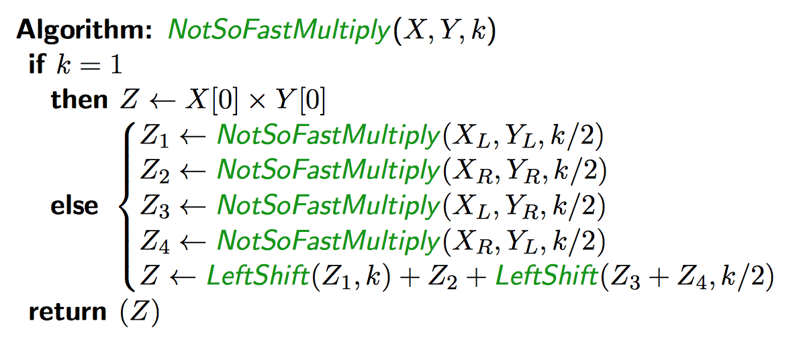
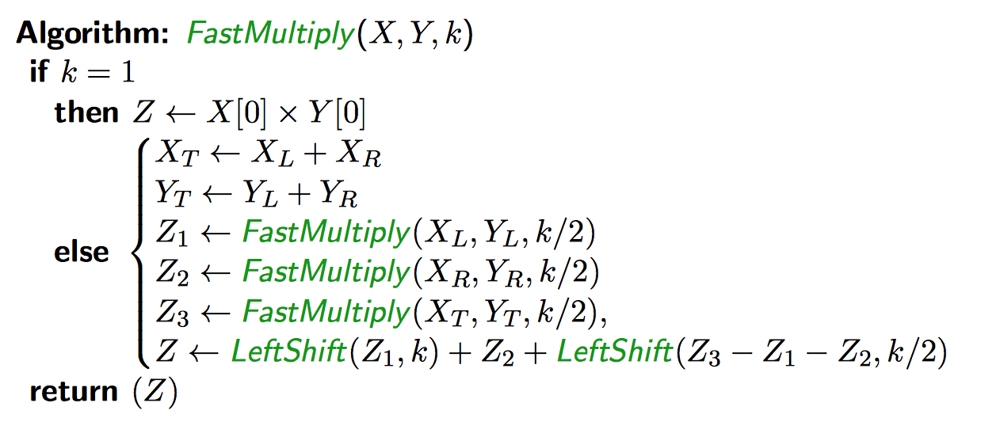

Exact recurrence for mergesort:
\[T(n) = \begin{cases}
T(\lceil\frac{n}{2}\rceil) + T(\lfloor\frac{n}{2}\rfloor) + cn, &n \gt 1\\
d, &n = 1\\
\end{cases}\]
Sloppy recurrence for mergesort, removing floors and ceils:
\[T(n) = \begin{cases}
2T(\frac{n}{2}) + cn, &n \gt 1\\
d, &n = 1\\
\end{cases}\]
These are identical for when \(\exists i \in \mathbb{Z} \mid n = 2^i\), and the sloppy recurrence only makes sense in this case.
Master Theorem provides the exact solution for \(n=2^i\). The complexity of this can be extrapolated for all values of \(n\), which will have the same growth rate.
Recurrence relation:
\[T(n) = 2T\left(\frac{n}{2}\right) + \Theta(1)\]
\(T(n) \in Theta(n)\), according to Master Theorem, but we can count exact comparisons, obtaining the sloppy recurrence:
\[C(n) = 2C\left(\frac{n}{2}\right)+2, \quad C(2) = 1\]
When \(n\) is a power of 2, the solution is \(C(n)=\frac{3n}{2}-2\), so it is optimal for these values of \(n\).
Given two points \((x_1, y_1), (x_2, y_2)\), we say \((x_1, y_1)\) dominates \((x_2, y_2)\) if \(x_1 \ge x_2 \land y_1 \ge y_2\). Given a set of points, find all the points that are not dominated by any other point in the set.
Given a set of \(Q\) distinct points, find two points \(Q[i] = (x,y)\) and \(Q[j] = (x', y')\) such that the distance \(\sqrt{(x'-x)^2+(y'-y)^2)}\) is minimized.
Recurrence relation:
\[\begin{align*}
T(n)&=2T\left(\frac{n}{2}\right)+\Theta(n\log n)\\
\therefore T(n) &\in \Theta(n\log^2 n)
\end{align*}\]
Given two \(k\)-bit integers \(x\) and \(Y\), find the \(2k\)-bit positive integer \(Z\) = \(XY\).

Karatsuba's algorithm: reduce the number of subproblems from 4 to 3

In practice, we actually want \(k\) to be a power of 2, so it's more than just a convenient assumption. If \(k\) is not a power of two, we can pad with zeroes to the left size so that the number of bits is a power of 2. This does not affect complexity.
Compute the \(n\) by \(n\) matrix product of two \(n\) by \(n\) matrices \(C=AB\)
\[A=\begin{bmatrix} a & b\\ c & d \end{bmatrix}, \quad B=\begin{bmatrix} e & f\\ g & h \end{bmatrix}, \quad C=\begin{bmatrix} r & s\\ t & u \end{bmatrix}\]
\[\begin{align*} r &= ae+bg\\ t&=ce+dg\\ s&=af+bh\\ u&=cf+dh\\ \end{align*}\]
We require 8 multiplications of \(\frac{n}{2}\) by \(\frac{n}{2}\) matrices in order to compute \(C=AB\).
Recurrence relation:
\[\begin{align*}
T(n)&=8T\left(\frac{n}{2}\right) + \Theta(n^2)\\
&\in \Theta(n^3)
\end{align*}\]
The Strassen Algorithm makes the improvement:
\[T(n)=7T\left(\frac{n}{2}\right)+\Theta(n^2) \in \Theta(n^{\log_2 n})\]
Given an array \(A\) of length \(n\) of distinct integer values, and an integer \(k\) where \(1\le k \le n\), find the \(k\)th smallest integer in \(A\).
The median is a special case of Selection where \(k=\left\lceil \frac{n}{2} \right\rceil\).
Pick a pivot element \(y\) in the array \(A\), and restructure \(A\) so that all elements less than \(y\) precede \(y\) in \(A\), and all elements greater occur after it. This is \(\Theta(n)\).
Suppose \(A[i] = y\) after restructuring. Let \(A_L\) be the subarray \(A[1..i]\) and let \(A_R\) be the subarray \(A[i+1..n]\). Then, the \(k\)th smallest element of \(A\) is:
\[\begin{cases} y, &k = i\\ \text{the } k\text{th smallest element of } A_L, &k \lt i\\ \text{the } (k-i)\text{th smallest element of } A_R, &k \gt i\\ \end{cases}\]
We say the pivot is good if \(i\) is in the middle half of \(A\). The probability that a pivot is good is \(\frac{1}{2}\). On average, we will encounter a good pivot after 2 iterations. If the pivot is good, then \(|A_L| \le \frac{3n}{4}\) and \(|A_R| \le \frac{3n}{4}\).
With an expected linear amount of work, the size of the subproblem is reduced by at least 25%. It follows that the average case complexity of QuickSelect is linear.
This method has a running time of \(O(n)\), including selecting a pivot, and the recursive call given that the pivot ensures best-case performance in QuickSelect.
The algorithm iterates through a list 5 elements at a time finding the medians of these 5-part groups using regular \(n^2\) sort (because it always has 5 elements, it is \(O(5^2)\), which is a constant \(c\).) That piece has a runtime of \(O(c\frac{n}{5})=O(n)\). Then it uses this version of QuickSelect recursively to find the median of the \(\frac{n}{5}\) medians, which is \(T(\frac{n}{5})\) to get the median of the medians, plus \(T(\frac{7n}{10})\) to QuickSelect the at most \(\frac{7n}{10}\) remaining elements by the median that was found. This recurrence relation yields a runtime of \(O(n)\).